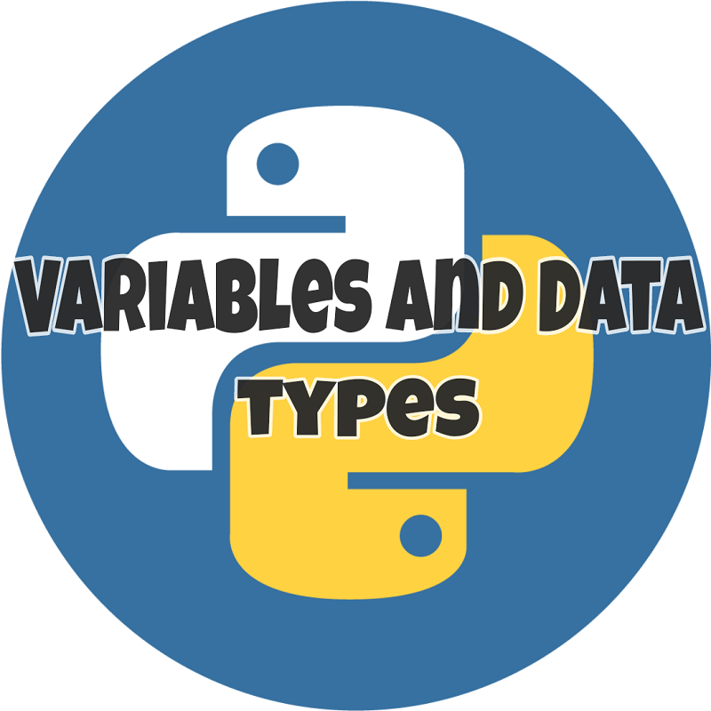

AI_FOR_ALL - Making Intelligence Simpler
"Let's Dive deep into the world of A.I."
How to Install Anaconda on Windows
Anaconda is a free and open source distribution of Python and R programming language for scientific computing. It is extensively used in data science, machine learning, deep learning and large scale data procesing applications. It simplifies package management and deployment...
Read more →
Everything you need to know about jupyter notebook
Jupyter notebook is a web based open source application developed by Project jupyter. It is platform independent as it runs directly on your web browser. Jupyter notebooks are extremely user friendly and provide an interactive web based environment that allows you to write and share documents...
Read more →

Python 101: Variables and Data Types
In this article we are going to look at variables in python. We are going to understand variables by answering some basic questions such as, what are variables?, why do we use variables?, How to declare variables?, what are naming conventions for variables?, etc. We are also going to look at some basic data types...
Read more →